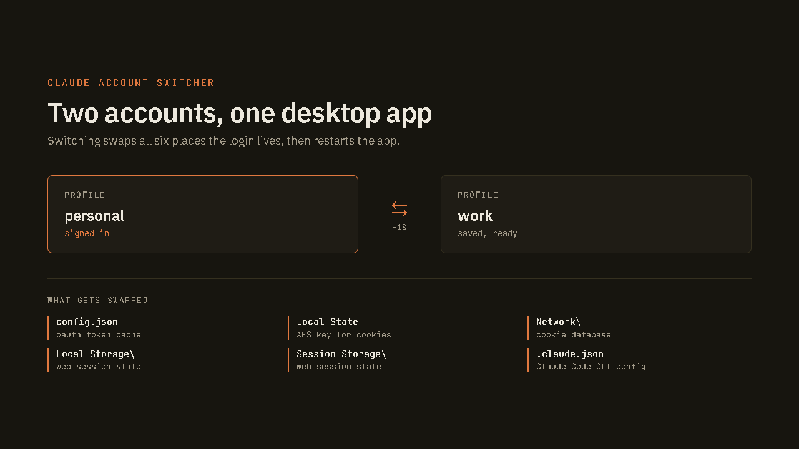

Claude Account Switcher
Two Claude accounts on one Windows desktop app, without re-logging in.
Keep two accounts signed in at once and switch between them in about a second. You can move a conversation across and carry on where you left off, and there is an optional watcher that fails over automatically when one account hits its rate limit.
Four PowerShell scripts and a WinForms GUI, so none of it needs a terminal once it is set up. Windows 10 or 11, the MSIX build of the Claude desktop app, and two accounts with their own subscriptions.

Your login lives in six places
That is the whole reason this exists. The desktop app spreads a session across a token cache, a DPAPI-wrapped key for the cookie store, the cookie database itself, local and session storage, and the Claude Code CLI config. Switching accounts means swapping all six together and restarting the app. Anything less leaves you half signed in.
Saved profiles live under your user folder, and switching is a double-click in the Accounts tab.
Moving a conversation costs one small file
The useful discovery. Conversation transcripts are already shared between accounts, because they sit in a project folder that is not scoped to an account at all. Only the session index is per-account.
So moving a conversation copies one small JSON file. The history itself never moves, and both accounts read the same transcript.
The rate-limit watcher
Off by default, and it ships in dry run so you can watch it decide before you let it act.
Detection is reactive by necessity. Nothing on disk reports how much quota you have spent, so a limit is only visible once a request has already been refused and the refusal is written into the transcript. When that happens the watcher records the cooldown, copies the session across, switches profiles, and relaunches straight back into the conversation through a deep link, then raises a toast saying which account you are on now. The turn that hit the limit is lost and needs re-sending.
Five-hour limits are excluded unless you opt in, and even then only when the window is far enough out to be worth spending the other account's weekly budget on. A limit that clears in ten minutes is cheaper to wait out.
Guarding a live credential store
Switching mutates files the app does not know are being touched, so the tool is built around that being risky. A cross-process lock means only one switch happens at a time. A switch interrupted partway is detected at next launch and repaired from the target profile, which stays intact. A profile counts as healthy only if its config actually parses and its cookie database is non-empty, rather than merely existing.
There is also a tripwire on the rate-limit format: if a limit record appears in a shape the watcher does not recognize, it says so instead of going quietly blind, and a self-test proves the detector still works after a Claude update.
What it will not do
Windows only, because the cookie encryption is bound to the machine and the user. Profiles cannot be exported, synced or backed up for the same reason. It needs the MSIX build specifically. It swaps the whole session rather than running two accounts side by side, since the app has no concept of more than one. And detection matches a private, undocumented record shape, so an app update could change it.
On automating this at all
Worth repeating from the README rather than leaving it out. Two accounts you pay for, each used inside its own limits, is legitimate on its own terms. Automating the failover is the part that reads as evasion rather than as having a work account and a personal one. Manual switching is far less ambiguous, which is why auto-switching is opt-in and ships in dry run.
MIT licensed. Inspired by claude-swap, which does this properly for the CLI and is cross-platform. This one exists because the desktop app stores its auth differently.